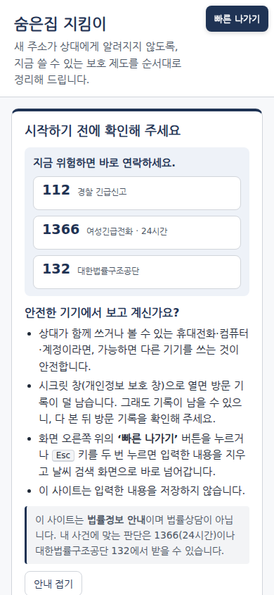

PT 작업자 전달용 · 2026-10-31 · 커밋 cacc901
숨은집 지킴이
서비스 전체 정리 (PT 작업자 전달용)
저장소: https://github.com/codyssey-EasyPeasy/sumeunjip (branch
main) · 이 문서 기준: 2026-10-31 21시 갱신(최신은 git log -1 -- docs/OVERVIEW.md), 배포 코드는 커밋 6672867 과 해시가 같음(docs/evidence/infra-2026-10-31-night.md 6절)같은 내용의 그림 포함 판:
docs/OVERVIEW.html (브라우저로 열기, 인쇄 가능)읽는 법
- 모든 숫자 옆에 그 숫자가 나온 저장소 파일을 적었습니다. PT 에 옮길 때 출처도 같이 옮겨 주세요.
- 저장소에서 증거를 찾지 못한 것은 미확인 이라고 적었습니다. 미확인 내용은 단정하지 말아 주세요.
- 모든 평가 수치는 합성(가짜로 만든) 데이터에서 나왔습니다. 실제 피해자·실제 서류로 잰 값이 아닙니다.
- 공격 문장 원문, 사람을 찾는 방법은 이 문서에 넣지 않았습니다. PT 에도 넣지 말아 주세요.
목차
- 한눈에 보기
- 기술 스택
- 아키텍처
- 서비스 구조
- 서비스 흐름
- 사용자 이용 절차
- 안전·개인정보 설계
- 품질 검증 결과
- 한계와 다음 단계
- 용어집
- 부록 A. PT 작업자 참고: 고쳐야 할 낡은 문구·캡처 주의
- 부록 B. 쓸 수 있는 그림 파일 목록
1. 한눈에 보기
| 구분 | 내용 |
|---|---|
| 문제 | 피해자가 피신해도, 새 주소가 행정·소송·생활 기록(주민등록, 소장 송달, 자녀 학교, 차량, 우편 등)을 타고 가해자에게 새어 나갈 수 있습니다. 막는 제도는 있지만 흩어져 있고, 신청해야만 작동하며, 어떤 제도는 신청 사실이 가해자에게 통지됩니다. (README.md, pt/index.html 3쪽, research/2026-10-31-정보조사.md) |
| 해결 | 이름·주소 없이 상황만 고르면(또는 말로 적으면), 새 주소가 샐 수 있는 경로와 그 경로를 막는 제도를 근거 조문·신청처·서류·통지 경고와 함께 급한 순서로 보여 주는 웹 서비스입니다. 제출할 서류 초안 속 위치 단서도 찾아 줍니다. |
| 누가 쓰나 | 스토킹·가정폭력·교제폭력·성폭력 피해자 본인과 가족·지인. 회원가입·로그인 없음. (docs/architecture.md 원칙 1) |
| 하지 않는 것 | 사람을 찾는 방법은 다루지 않습니다. 다른 사람의 주소·위치를 찾으려는 질문은 거절하고 대신 보호 제도를 안내합니다. 법률상담이 아니라 법률정보 안내입니다. |
핵심 숫자
| 숫자 | 뜻 | 출처 |
|---|---|---|
| 84개 경로 / 16개는 막을 제도 없음 | 주소가 드러날 수 있는 기록·절차 경로 84개를 정리. 그중 16개는 막는 제도가 없어 '잔여 위험'으로 따로 안내 | data/knowledge.json |
| 56 / 56 | 합성 시나리오 20개에서 꼭 나와야 할 제도를 모두 찾음(잘못 적용 0건) | data/eval/results.json |
| 35 / 35 거절, 0 / 25 오거절 | 다른 사람 찾기 질문은 모두 거절, 정상 질문은 하나도 거절 안 함(운영 앱 경로, 커밋 2418ad9) | data/eval/results_app_llm.json |
| 공격 성공률 5.4% → 2.7% | 자체 공격 121개로 점검, 대책 후 서비스 전체 경로 기준. 실제 위치 조회 방법을 낸 경우 0건 | docs/redteam-summary.md |
| 입력 저장 0 · 외부 LLM 호출 0 | DB 없음, 로그엔 '메서드 경로 상태코드'만. 표지 문자열 60회 전송 후 세 로그 모두 0건 | docs/evidence/infra.md §6, docs/architecture.md |
2. 기술 스택
| 계층 | 기술 | 버전 | 역할 | 선택 이유 (저장소 근거) |
|---|---|---|---|---|
| 화면(웹) | HTML / JavaScript / CSS (프레임워크 없음) | — | 상황 선택, 결과 표시·인쇄, 서류 점검 1단계, 빠른 나가기 | 외부 CDN·쿠키·localStorage 없이 만들려고 (README.md 구조 표, web/static/app.js 머리 주석) |
| 언어 | Python | 3.12 이상 | 운영 API·추론 서버 | pyproject.toml, docs/SPEC.md §0 |
| 패키지 관리 | uv (uv.lock) | — | 의존성 고정 설치(uv sync --frozen) | README.md 실행 절 |
| 운영 API | FastAPI / Starlette / Uvicorn / Pydantic / httpx | 0.162.0 / 1.10.0 / 0.54.0 / 2.14.2 / 0.28.1 | 진단·검색·가드·LLM 중계 | 직접 의존성 4개뿐(런타임 최소화, SPEC.md §0). 버전은 uv.lock |
| 추론 서버 | FastAPI + sentence-transformers, FlagEmbedding, GLiNER, PyTorch | fastapi 0.162.0 · uvicorn 0.54.0 · sentence-transformers 6.2.0 · FlagEmbedding 1.4.2 · gliner 0.2.29 · torch 2.15.0 · transformers 5.16.1 (배포 서버 gpu/.venv 실측 2026-10-31 20:5x; 서버의 gpu/uv.lock 은 저장소에 없음) | 임베딩·재순위·개체명 인식·의도 점수·LLM 중계·검증 | gpu/pyproject.toml |
| 임베딩 모델 | BAAI/bge-m3 | — | 조문 검색, 질문 의도 점수 | gpu/server.py |
| 재순위 모델 | BAAI/bge-reranker-v2-m3 | — | 검색 결과 재정렬, 답 문장 근거 확인 | gpu/server.py, gpu/verify.py |
| 개체명 인식 | urchade/gliner_multi-v2.1 (+정규식) | — | 서류 속 주소·직장·학교·차량·생활권 단서 찾기 | gpu/server.py |
| 내부 LLM | Qwen/Qwen3-8B-AWQ (Apache-2.0) | — | 상황 정리, 근거 답, 문장 다시 쓰기, 답 검증 | 직접 띄운 모델 하나로 외부 전송 0 (docs/architecture.md 원칙 5, SPEC.md §8) |
| LLM 서빙 | vLLM (OpenAI 호환 서버) | 0.32.0 (배포 서버 vllm-venv 실측, docs/evidence/infra-2026-10-31-night.md 5절) | Qwen 실행, JSON 형식 강제 출력 | gpu/llm_start.sh, docs/architecture.md |
| GPU | NVIDIA L4 1장 | 23,034 MiB, 드라이버 580.159.04, CUDA 13.0 | 모든 모델 실행 | docs/evidence/infra.md §2 |
| 실행 관리 | 셸 스크립트 + PID 파일 (Docker·systemd 안 씀) | — | 시작·중지 | scripts/start_app.sh, gpu/start.sh, gpu/llm_start.sh |
| 시험 | pytest | — | 앱 572 passed · 36 xfailed, GPU 187 passed · 1 skipped · 4 xfailed (2026-11-01 00시대, 코드 642e5e1. xfail 은 기록 시험의 알려진 결함 — docs/TEST_RESULTS.md) | README.md 실행 절 |
| (개발용만) | GLM-5.3-Flash | — | 합성 사용자 시뮬레이터·레드팀 도구. 운영 코드에는 없음 | docs/SPEC.md §11.7 |
3. 아키텍처
3.1 서버 배치
출처: docs/architecture.md 배치도, docs/evidence/infra.md §1·§3
- 저장소 문서의 서버 이름은
hk-ops·hk-gpu이고, 대회 서버 이름은 각각inno-server-028(운영)·inno-gpu-028(GPU)입니다(docs/evidence/infra.md§1 표). CPU 는 운영 서버 Intel Xeon Gold 5220 2 vCPU·RAM 7.8GiB, GPU 서버 Intel Xeon Silver 4416+ 4 vCPU·RAM 47GiB 이고 둘 다 Ubuntu 24.04.1 LTS(커널 6.8.0-136)입니다(2026-10-31 20:54lscpu·nproc·free -h·/etc/os-release실측,docs/evidence/infra-2026-10-31-night.md1절). - 서버 접근은 노트북 VPN(NCP SSL-VPN) 경유, 시연은 ssh 터널로만 합니다. (
docs/evidence/infra.md머리말)
3.2 포트
| 서버 | 주소:포트 | 프로그램 | 누가 접근 |
|---|---|---|---|
| hk-ops | 127.0.0.1:8080 | 운영 API + 웹 화면 | 서버 자신(시연은 ssh 터널) |
| hk-gpu | 0.0.0.0:8000 | 추론 API | 포트는 운영 서버(내부망) 와 SSL-VPN 사용자에게 닿음(2026-10-31 20:55 VPN 노트북 실측). 클라우드 콘솔(ACG)은 바꿀 수 없어 2026-11-01 부터 공유 토큰 필요: /health(참·거짓만) 밖은 토큰 없이 401(VPN 노트북·운영 서버 실측, docs/evidence/deploy-2026-11-01.md) |
| hk-gpu | 127.0.0.1:8001 | vLLM (Qwen3-8B) | 서버 자신만 |
출처: docs/evidence/infra.md §3 (ss -ltnp 실측)
3.3 신뢰 경계 (어디를 믿지 않고, 어떻게 막는가)
| 경계 | 믿지 않는 것 | 막는 방법 |
|---|---|---|
| 브라우저 → 운영 API | 사용자 입력·대화 이력 전부 | 입력 길이·형식 상한, 모르는 필드 거부, 2단 가드, 오류 응답에 입력을 되비추지 않음, 보안 머리글 |
| 운영 API → 추론 서버 | 내부망 + VPN 사용자(포트가 VPN 에서 닿음) | 공유 토큰 X-Internal-Token(없거나 틀리면 401, 2026-11-01), 본문 20KB 상한, 추론 서버에서 같은 가드를 한 번 더, 글자 위치 단위 변환(UTF-16) |
| 사용자 글 → LLM | 프롬프트 주입(몰래 넣은 지시문) | 특수 토큰·역할 머리말·지시문 문장 제거, JSON 형식 강제 |
| LLM → 사용자 | 생성된 문장 전부 | 공통 출력 가드, 답 문장별 근거 검증, 탐색 표현 검사, 다시 쓰기 정렬 검사 |
| 개발 기기 ↔ GLM(제3자) | 제3자 서버 | 시뮬레이터·레드팀 도구만 사용, 합성 데이터만 보냄 |
출처: docs/architecture.md 신뢰 경계
3.4 모델과 GPU 메모리 (NVIDIA L4, 23,034 MiB)
| 프로그램 | 모델 | GPU 메모리 |
|---|---|---|
| vLLM | Qwen3-8B-AWQ | 13,948 MiB |
| 추론 API | bge-m3 + bge-reranker-v2-m3 + GLiNER | 6,518 MiB (재기동 뒤 20:5x 실측. 재기동 전 18:1x 6,950) |
| 합계 | 20,480 MiB (재기동 전 18:1x 20,912) | |
| 2026-11-01 메모리 가드 배포 뒤 | 추론 API 5,686~5,790 MiB | 19,648~19,752 MiB, 동시 8 부하 중 최대 20,476 MiB (docs/evidence/deploy-2026-11-01.md, data/eval/results_load.json) |
출처: docs/evidence/infra-2026-10-31-night.md 2·3절(nvidia-smi·free -h·ps -o rss, 2026-10-31 20:5x). 추론 API 메모리는 기동할 때마다 조금 달라 20,480~20,912 MiB 범위로 적어도 됩니다. 서버 RAM 사용: 운영 서버 547MiB/7.8GiB(앱 프로세스 RSS 약 66MiB), GPU 서버 6.9GiB/47GiB(추론 API RSS 약 2.4GiB, vLLM 약 1.3+2.9GiB).
3.5 외부로 나가지 않는 것
- 사용자 입력을 외부 LLM·외부 API 로 보내는 경로가 없습니다. 쓰는 LLM 은 GPU 서버에서 직접 띄운 Qwen 하나뿐이고, 실패해도 다른 LLM 으로 넘기지 않습니다. (
docs/SPEC.md§11.7,docs/evidence/infra.md§5) - 런타임 코드에 있는 외부 주소는 '빠른 나가기'의 이동 대상(구글 '날씨' 검색) 하나뿐입니다.
- GPU 서버가 기동할 때 모델 허브(HF Hub)에 파일 확인 요청을 보내던 것(경고 22회, 사용자 데이터 없음)은 커밋
6672867에서HF_HUB_OFFLINE=1로 끊었습니다(gpu/start.sh). 다시 띄운 뒤(18:56:50) 새 경고는 0회입니다(20:5x 실측: 경고 수 22 그대로, 마지막 경고는 직전 프로세스, 현재 프로세스 환경에HF_HUB_OFFLINE=1,docs/evidence/infra-2026-10-31-night.md4절).
4. 서비스 구조
4.1 디렉터리 지도
| 경로 | 하는 일 |
|---|---|
web/index.html, web/static/app.js, app.css | 화면. 탭 3개, 결과 카드, 빠른 나가기 |
web/static/detect.js | 서류 점검 1단계(브라우저 안에서만 도는 규칙 검사) |
app/main.py | 운영 API 입구. 입력 검사, 보안 머리글, 로그 정책 |
app/engine.py | 규칙 진단 엔진. 어떤 제도를 권할지는 여기서만 정함 |
app/guard.py | 2단 가드(질문이 '다른 사람 찾기'인지 판정), 입력 정규화 |
app/retrieval.py | 조문 검색(임베딩+재순위, 안 되면 낱말 검색 BM25) |
app/llm.py | 추론 서버 LLM 기능 중계, 출력 가드, 인용 정리 |
app/humanize.py | 내부 번호(A1 등)를 제도 이름으로 바꿔 표시 |
gpu/server.py | 추론 API: 임베딩·재순위·개체명 인식·의도 점수·LLM 3기능 |
gpu/verify.py | 답 검증 루프, 공통 출력 가드 |
gpu/llm.py | vLLM 호출(thinking 끔, JSON 형식 강제) |
gpu/guard.py | app/guard.py 와 같은 파일(2차 가드) |
data/knowledge.json | 지식표: 경로·제도 84행, 상황 항목 30개 |
data/laws/articles.jsonl | 법령 조문 스냅샷 174건 |
data/eval/ | 합성 평가 데이터와 결과 |
scripts/, gpu/*.sh | 시작·중지 스크립트 |
docs/, research/, pt/ | 명세·아키텍처·증빙·조사·발표 자료 |
4.2 운영 API 목록 (app/main.py)
| 주소 | 하는 일 | AI 사용 | 비고 |
|---|---|---|---|
GET / | 화면(web/index.html) | — | |
GET /api/health | 상태(지식표 행 수, 조문 임베딩 완료 여부) | — | |
GET /api/flags | 상황 항목 30개, 피해 유형 4개 | — | |
GET /api/features | AI 기능을 지금 쓸 수 있는지 | — | 30초 캐시. false 면 화면이 AI 기능을 숨김 |
POST /api/diagnose | 피해 유형+상황 → 제도 목록 | 안 씀(규칙 엔진) | 상황 항목 최대 60개 |
POST /api/search | 근거 조문 검색(상위 5개) | 임베딩·재순위 | 1~500자, 가드 거침 |
POST /api/doccheck | 서류 정밀 점검(단서 위치만 돌려줌) | GLiNER | 최대 20,000자 |
POST /api/intake | 말로 적은 상황 → 항목 미리 선택 | Qwen | 1~2,000자, 가드 거침 |
POST /api/answer | 고른 제도에 대한 질문에 근거 답 | Qwen + 검증 | 1~500자, 항목 1~8개, 가드 거침 |
POST /api/rewrite | 서류 문장을 안전한 문장으로 | Qwen | 1~1,500자, 동시 2건·주소당 1건 |
오류: 시간 초과 504, 기능 불가 503("지금은 이 기능을 쓸 수 없습니다. 체크 항목으로 계속 진행할 수 있습니다."), 형식 오류 422(입력 내용을 되비추지 않음). 출처: app/main.py
추론 API(gpu/server.py): /health, /embed, /rerank, /ner, /intent, /llm/intake, /llm/answer, /llm/rewrite. 본문 20KB 초과 시 413.
4.3 데이터 모델 — 지식표 (data/knowledge.json, version 2026-10-31)
한 행 = "주소가 샐 수 있는 경로 하나 + 그것을 막는 제도". 주요 칸:
| 칸 | 뜻 |
|---|---|
id, area, path | 번호, 영역, 경로 이름 |
exposure | 이 경로로 무엇이 드러나는지(방어 관점 한 문장) |
measure | 막는 제도 |
basis | 근거 법령·조문·시행일·원문 링크 |
victim_types | 쓸 수 있는 피해 유형(유형 무관 = any) |
triggers | 어떤 상황 항목일 때 해당하는지 |
urgency | 급한 정도 1~3 |
timing, where, documents, limits | 시기, 신청처, 서류, 한계 |
notify_warning | 신청하면 상대에게 알려질 수 있다는 경고 |
status | 시행 중 / 시행 예정 / 막을 제도 없음 |
confidence | 법령 원문 확인 수준 |
plain, plain_reviewed | 쉬운 말 설명, 사람 검수 여부 |
| 집계 | 값 |
|---|---|
| 전체 | 84행, 상황 항목 30개(주거·소송·수사·자녀·차량·우편·통신·디지털·생활 등 7묶음) |
| 상태 | 시행 중 67 · 막을 제도 없음 16 · 시행 예정 1(2027-04-22) |
| 영역 | 소송·수사 28 · 행정 23 · 피신·지원 9 · 학적·보육 8 · 차량·우편·통신 8 · 디지털·위치 8 |
| 확인 수준 | 확인 49 · 부분확인 31 · 미확인 4 |
| 급한 정도 | 1단계 28 · 2단계 43 · 3단계 13 |
| 통지 경고가 있는 행 | 12 |
| 쉬운 설명 사람 검수 | 0 / 84 (모두 검수 전 → 화면에 'AI 생성(검수 전)' 표시) |
출처: data/knowledge.json 집계(2026-10-31)
4.4 데이터 모델 — 조문 스냅샷 (data/laws/articles.jsonl)
- 국가법령정보센터 현행 조문 174건(65개 법령), 2026-10-31 기준.
- 그중 화면·검색에 쓸 수 있는 조문(
exposable)은 131건. 나머지(열람·교부 절차처럼 사람 찾기에 쓰일 수 있는 조문)는 검색 대상에서 뺐습니다. 표시가 없으면 빼는 쪽으로 처리(fail-closed). - 일부만 보여 주는 발췌 조문 7건.
출처: data/laws/articles.jsonl 집계, app/retrieval.py, docs/architecture.md
5. 서비스 흐름
5.1 진단 (AI 안 씀)
- 브라우저 →
/api/diagnose{피해 유형, 상황 항목} - 규칙 엔진이 84행을 하나씩 확인: 상황 조건이 맞는가 → 피해 유형이 맞는가 → 상태(시행 중/예정/없음)
- 세 묶음으로 나눔: 해당 제도(체크리스트) / 잔여 위험(막을 제도 없음) / 이 유형엔 해당 없음
- 정렬: 급한 정도 1→2→3 → 영역 순 → 번호 순, 시행 예정은 맨 뒤
- 화면: '지금 먼저 할 일' 최대 5건 + 나머지는 접어 둠
출처: app/engine.py, web/static/app.js
5.2 근거 질문 (이게 무슨 뜻인가요?)
- 질문 + 고른 제도 번호 → 운영 API 1차 가드
- 통지 여부·효과 시점 질문이면 AI 가 만들지 않고 지식표 원문을 그대로 보여 줌
- 추론 서버 2차 가드 → 지식표 행 + 공개 조문만으로 Qwen 이 답 생성
- 검증: 규칙 → 재순위 모델(문장마다 근거 대조) → Qwen 검증기
- 실패하면 한 번 다시 생성 → 그래도 실패하거나 시간이 4초 미만 남으면 원문 발췌로 대신 (전체 예산 12초)
- 공통 출력 가드 → 운영 API 출력 가드·인용 정리 → 화면(답 종류 배지와 함께)
출처: gpu/verify.py, gpu/server.py, app/llm.py
5.3 서류 점검
- 1단계(기본 점검): 브라우저 안 규칙으로만. 서버로 보내지 않음
- 2단계(정밀 점검): 사용자가 눌렀을 때만 서버로 → GLiNER + 정규식 → 단서 위치만 돌려줌
- 다시 쓰기: 원문 + 단서 → Qwen 제안 → 원문과 정렬되는지·없던 숫자·새 이름·장소가 생겼는지 검사 → 문제 있으면 규칙 치환(예: [주소 비공개])
출처: web/static/detect.js, app/main.py, gpu/server.py
5.4 가드 판정 (질문이 '다른 사람 찾기'인가?)
- 입력 정규화: 글자 모양 통일, 숨은 문자 제거, 인코딩된 글 풀기 등
- 규칙(낱말·구문) + 임베딩 의도 점수로 판정
- 등급 5개:
- 본인 보호(self_protect) → 그대로 진행
- 일반(neutral) → 그대로 진행
- 애매함(ambiguous) → 진행하되 보호 안내 상자를 붙임
- 제3자 탐색(third_party_locate) → 거절 + 보호 제도 대안 2~3개 + 1366·132·112
- 다시 써 주세요(rephrase) → 초성만 쓴 글
- 대화 이력(최근 6턴)도 이어 붙여 다시 판정. 같은 가드를 운영 API 와 추론 서버에서 두 번 돌림
출처: app/guard.py, app/main.py, gpu/server.py (판정 규칙 원문은 공개하지 않음)
5.5 답변 검증 루프 (그림은 HTML 판 참고)
생성 → 검증 → (실패) 1회 재생성 → 검증 → (실패) 원문 발췌. 답 종류: generated(생성) · regenerated(다시 생성) · extractive(발췌) · not_found(확인되지 않음) · refused(거절).
6. 사용자 이용 절차
단계 1. 첫 화면 — 안전 확인
- 보는 것: 제목 '숨은집 지킴이', 한 줄 소개, 오른쪽 위 빠른 나가기 버튼, '시작하기 전에 확인해 주세요' 상자
- 상자 안: 긴급 연락처 112 · 1366(24시간) · 132(누르면 전화), 안전한 기기 안내(상대와 같이 쓰는 기기 피하기, 시크릿 창 권장, 빠른 나가기·Esc 두 번, "입력한 내용을 저장하지 않습니다"), "법률정보 안내이며 법률상담이 아닙니다"
- 하는 것: 읽고 '안내 접기'
- 캡처:
screens/v3-01-home-safety.png(PC),screens/v3-01m-home-mobile.png(모바일)

screens/v3-01-home-safety.png
screens/v3-01m-home-mobile.png단계 2. 피해 유형과 상황 고르기 ('보호 제도 찾기' 탭)
- 피해 유형 4개 중 하나: 가정폭력 / 스토킹 / 교제폭력 / 성폭력 ("이름이나 주소는 적지 않아도 됩니다")
- 상황 항목 30개 중 해당하는 것 체크(예: 최근 이사, 가해자가 먼저 소송을 냄, 자녀가 학교에 다님, 옛 주소로 우편물이 감)
단계 2-1. (선택) 말로 설명하기 — AI
- 상황을 자유롭게 적고(최대 2,000자) '항목 골라 보기'
- AI 가 유형·항목을 미리 체크(점선 강조). 노란 확인 상자에 'AI 생성' 배지, 고른 항목마다 '빼기', 필요하면 확인 질문
- '고른 항목을 확인했습니다'를 체크해야 제출 버튼이 켜짐 → AI 가 혼자 제출하는 일은 없음
- 캡처:
screens/v3-02-intake-prefill-confirm.png

screens/v3-02-intake-prefill-confirm.png단계 3. 결과 보기
- '보호 제도 보기' → 요약(해당 제도 N건 · 잔여 위험 N건 · 해당 없음 N건), 결과 인쇄하기
- 지금 먼저 할 일: 급한 제도 최대 5건(누르면 해당 카드로 이동)
- 제도 카드: 급한 정도 배지, 제도 이름, 확인 수준, 시기, 쉬운 설명, 접힌 칸('어디서 신청하나요'·'필요한 서류'·'한계'·'근거·자세히')
- 캡처:
screens/v3-03-diagnose-top.png

screens/v3-03-diagnose-top.png단계 4. 통지 경고 확인
- 신청하면 상대에게 알려질 수 있는 제도는 주황 경고 상자가 붙고, '상대에게 알려질 수 있다는 점을 확인했습니다' 를 체크해야 신청 방법이 보임
- 캡처: 체크 전
screens/v3-04-notify-before-confirm.png, 체크 후screens/v3-05-notify-after-confirm.png

screens/v3-04-notify-before-confirm.png
screens/v3-05-notify-after-confirm.png단계 5. 잔여 위험 확인
- '제도로 막을 수 없는 경로 — 미리 대비해 주세요': 주소가 남을 수 있는 기록과 "이 경로를 막는 제도는 없습니다", 상담 안내만 보여 줌
- 캡처:
screens/v3-06-residual-risk.png

screens/v3-06-residual-risk.png단계 6. (선택) 이게 무슨 뜻인가요? — AI
- 카드의 버튼 → 질문(최대 500자) → 답 위에 종류 배지: 'AI 생성 + 문장별 근거 확인' / '고쳐서 다시 확인함' / '안내문 원문 발췌' / '안내문 원문' / '확인되지 않음'
- 캡처:
screens/v4-07-answer-generated.png,screens/v4-08-answer-extractive.png(현재 배포본 재촬영, 보호 안내 상자 없음). 옛v3-07·v3-08은 보정 전 화면(부록 A)

screens/v4-07-answer-generated.png
screens/v4-08-answer-extractive.png단계 7. (선택) 서류 점검 탭
- 서류 초안 붙여 넣기 → ① 기본 점검(브라우저 안에서만) ② 정밀 점검(서버) ③ 안전한 문장으로 바꾸기(AI, 1,500자 이하)
- 원문에 단서 색칠 + '찾은 단서 N건' 목록과 바꾸는 방법 제안
- 바꾸기 결과: 원래 문장 / 바꾼 문장 나란히, "제안일 뿐입니다. 꼭 확인해 주세요"
- 캡처:
screens/v3-09-doccheck-tier1-tier2.png,screens/v3-10-rewrite-before-after.png

screens/v3-09-doccheck-tier1-tier2.png
screens/v3-10-rewrite-before-after.png단계 8. (선택) 근거 조문 탭
- 질문 → 법 조문 카드(법 이름·조문·시행일·본문·원문 링크)
- 다른 사람의 주소·위치를 찾으려는 질문이면 거절 상자 + 대안 제도 3개 + 1366·132·112
- 캡처:
screens/v3-11-locate-refused-alternatives.png(주의: 부록 A)
언제든. 빠른 나가기
- 버튼 또는 Esc 1초 안에 두 번 → 대화·입력 모두 지움 → 탭 제목 '날씨' → 구글 '날씨' 검색으로 이동(뒤로 가기 기록에 안 남음)
- 캡처:
screens/v3-12-quick-exit.png(버튼 위치 강조 장면),screens/v4-12-quick-exit-after.png(누른 뒤 화면 — 이동 주소는 google 날씨 검색, 화면은 촬영용 로컬 대체 페이지)

screens/v3-12-quick-exit.pngscreens/v4-12-quick-exit-after.png이용 예시 시나리오 (합성, 실제 사례 아님)
- 공용이 아닌 자기 휴대폰, 시크릿 창으로 접속 → 안전 안내를 읽고 접음
- '가정폭력' 선택, '최근 이사(또는 이사 예정)', '민사·가사 소송 중이거나 예정', '가해자가 원고·채권자로 먼저 소송을 냄', '자녀가 학교에 다님' 체크
- '보호 제도 보기' → '지금 먼저 할 일'에서 급한 제도부터 확인. 예: 소송 중 항목을 고르면 '소송관계인 개인정보 보호조치(주소 등 비공개)'가 급한 정도 1로 나옴(
data/knowledge.jsonJ1) - 통지 경고가 붙은 제도는 "상대에게 알려질 수 있다"를 확인한 뒤 신청처·서류를 봄
- 잔여 위험 묶음에서 막을 제도가 없는 경로를 미리 대비
- 답변서 초안을 '서류 점검'에 붙여 주소·학교 단서를 찾아 '[주소 비공개]' 같은 문구로 바꿈
- 결과를 인쇄해 1366 상담 때 가져가고, 끝나면 빠른 나가기
(각 단계의 화면 동작은 위 단계 1~8 의 코드·캡처 근거와 같습니다. 이 인물·사연은 설명을 위해 지어낸 것입니다.)
7. 안전·개인정보 설계
| 항목 | 설계 | 출처 |
|---|---|---|
| 저장 안 함 | DB 없음. 서버가 쓰는 파일은 PID·로그뿐. 대화 이력은 브라우저 메모리에만 있다가 요청마다 함께 보냄(서버 무상태). 새로 고침·빠른 나가기로 사라짐 | docs/architecture.md, web/static/app.js |
| 브라우저 | localStorage·sessionStorage·쿠키 안 씀, 외부 CDN 없음 | web/static/app.js 머리 주석 |
| 로그 | 운영 API: '메서드 경로 상태코드' 한 줄만(본문·IP 없음), 가드는 등급·사유만. 실측 app.log 3,362줄이 18가지 모양뿐. vLLM 요청·출력 로그 끔. 추론 서버 접속 로그는 켜져 있어 운영 서버 내부 IP·경로·상태코드가 남음 | docs/evidence/infra.md §6, docs/architecture.md |
| 표지 문자열 시험 | 특수 문자열을 60회 보낸 뒤 앱·GPU·LLM 로그에서 0건 | docs/evidence/infra.md §6 |
| 보안 머리글 | CSP(자기 사이트만), Cache-Control: no-store, X-Frame-Options: DENY, Referrer-Policy: no-referrer, nosniff | app/main.py |
| 입력 상한 | 질문 500자, 상황 2,000자, 서류 20,000자, 다시 쓰기 1,500자, 이력 6턴·3,000자 | app/main.py |
| 가드 | 2단 가드(규칙 + 임베딩 점수), 운영 API·추론 서버 두 번. 거절할 때도 보호 제도 대안과 연락처를 붙임 | app/guard.py, app/main.py |
| AI 출력 통제 | 답은 지식표·공개 조문만 근거로, 문장별 검증. 통지·시점 질문은 생성 안 함. AI 문장에는 'AI 생성' 배지 | gpu/verify.py, app/llm.py |
| 사람 확인 | AI 가 고른 항목은 사용자가 확인해야 제출. 통지 경고는 확인 체크 후에만 신청 방법 표시 | web/static/app.js |
| 빠른 나가기 | 버튼 / Esc 두 번. Esc 가 이동을 취소하던 문제를 6672867 에서 수정(기본 동작 막기 + 다음 틱 이동 + 0.4초 간격 최대 8회 재시도) | web/static/app.js, git 6672867 |
| 법적 경계 | 법률정보 안내이며 법률상담이 아님. 막는 제도만 안내, 사람 찾는 방법·조회 요건은 다루지 않음. 열람·교부 절차 조문은 검색에서 뺌 | README.md, docs/architecture.md 원칙 2 |
| 접근 코드 | 기능은 있으나 기본 꺼짐(피해자 본인이 직접 쓰도록 한 결정) | app/main.py, docs/SPEC.md §7 |
| 속도 제한 | '다시 쓰기'에만(동시 2건, 주소당 1건). 다른 기능엔 없음 | app/main.py |
| 추론 서버 인증 | /health 밖 모든 경로에 공유 토큰(상수 시간 비교, 토큰 파일 없으면 전부 거절). 토큰은 두 서버 설정 파일(600)에만, 로그 3개 출현 0건 | gpu/server.py, docs/SPEC.md §11.10 |
| GPU 메모리 가드 | CUDA 메모리 부족은 500 대신 503 + 캐시 비움, 큰 요청 뒤 캐시 비움, expandable_segments | gpu/server.py, gpu/start.sh |
8. 품질 검증 결과 (모두 합성 데이터)
| 영역 | 지표 | 결과 | 출처 |
|---|---|---|---|
| 진단 | 꼭 나올 제도 재현 / 잘못 적용 | 56/56 / 0건 | data/eval/results.json |
| 진단 | 시행 예정·잔여 위험·해당 없음 위치 | 4/4 · 7/7 · 6/6 | 같은 파일 |
| 근거 조문 | 스냅샷에 있음 / 시행일 일치 | 210/210 / 203/210 (96.7%) | 같은 파일 |
| 서류 점검 | 정밀도 / 재현율 / F1 (기본 → 정밀 → 결합) | F1 0.682 → 0.748 → 0.823 (결합 정밀도 0.932, 재현율 0.737) | 같은 파일, docs/evidence/charts/detection-f1.svg |
| 서류 점검 | 라벨별 결합 재현율 | 주소·전화·이메일·주민번호·차량·학교 1.0, 직장 0.5, 생활권 0.0 | 같은 파일 |
| 상황 정리 | 20건: 유형 정확도 / 항목 F1 | 0.95 / 0.791 (평균 1.54초) | data/eval/results_llm.json |
| 근거 답 | 45건 정답률 | 0.956 | 같은 파일 |
| 근거 답 | 근거 없는 문장 비율 | 첫 생성 3.6% → 최종 0% (같은 검증기로 다시 잰 값, 독립 판정 아님) | 같은 파일, charts/answer-modes.svg |
| 다시 쓰기 | 30건: 기본 점검 단서 | 33 → 0 | 같은 파일 |
| 가드(운영 앱) | 찾기 질문 거절 / 정상 질문 오거절 | 35/35 / 0/25 (2418ad9) | data/eval/results_app_llm.json |
| 가드(운영 앱) | 답할 수 있는 질문 답함 / 근거 밖 질문 '확인되지 않음' | 12/15 / 15/15 | 같은 파일 |
| 보호 안내 보정 | 안내가 붙은 사용자 대화 | 38/40 → 1/40 (응답 96건 → 1/225) | data/eval/notice_calibration_summary.md |
| 레드팀 | 공격 121개, 서비스 전체 경로 성공률 | 5.4% → 2.7% (fc84eb4) | docs/redteam-summary.md, charts/redteam-asr.svg |
| 레드팀 | 실제 위치 조회 방법을 낸 경우 | 0건(모든 경로·모델) | 같은 파일 |
| 다턴 시뮬레이션 | 정상 질문 거절 v21 → v3 | 103건/38대화 → 23건/17대화 | data/eval/sim_results/*/summary.md, charts/guard-before-after.svg |
| 다턴 시뮬레이션 | 공격자 12명 강한 누출 | 0 | data/eval/sim_results/v3-20261031/summary.md |
| 속도 | 서버 안 중앙값: 진단 / 검색 / 상황 정리 / 근거 답 / 다시 쓰기 | 0.005초 / 0.945초 / 1.827초 / 5.745초 / 2.366초 | docs/evidence/infra.md §7 |
| 속도 | 100회 순차 p95(터널 경유): 진단 / 검색 / 서류 점검 / 상황 정리 / 근거 답 | 0.143초 / 1.09초 / 0.19초 / 1.94초 / 9.94초 (전부 200) | data/eval/results_latency_tokens.json |
| 동시 부하 | 동시 처리 1·2·4·8건: 근거 답 p95 / 원문 발췌 대체 | 8.4·11.3·16.5·17.8초 / 3.6·4.9·14.0·50.5%. 오류는 1,500자 다시 쓰기 504(동시 4·8 각 2건)뿐 | data/eval/results_load.json, docs/COST_LATENCY.md §2-1 |
| 용량·비용 | GPU 1장, 품질 유지(동시 2) | 시간당 약 200 세션, 꽉 찰 때 세션당 약 9.7원(공공기관용 정가), 세션당 실제 토큰 약 2.2만 | docs/COST_LATENCY.md §3-3 |
| 서류 점검 | 700자 뒤 합성 단서(주소·학교) | 0/8 → 8/8 (NER 조각 분할, 2026-11-01 배포본) | docs/TEST_RESULTS.md, docs/EVIDENCE.md 9절 |
| 시험 | 자동 시험 | 앱 572 passed · 36 xfailed(기록 시험의 알려진 결함), GPU 187 passed · 1 skipped · 4 xfailed (2026-11-01 00시대) | docs/TEST_RESULTS.md |
9. 한계와 다음 단계
한계 (출처: README.md 한계 절, data/eval/notice_calibration_summary.md, docs/redteam-summary.md)
- 모든 수치는 합성 데이터에서만 나왔습니다. 실제 이용자·실제 서류로 평가하지 않았습니다.
- 자기 보호 질문을 '다른 사람 찾기'로 잘못 거절하는 경우가 남아 있습니다(18건/14대화, 배포본 재측정). 거절 때도 보호 대안과 1366 은 붙습니다.
- 운영 앱 측정에서 답할 수 있는 질문 15개 중 3개가 가드에 거절됐습니다(모두 같은 질문).
- 말로 설명하기 단독 정확도는 낮습니다(다턴 시뮬레이션 유형 0.575, 상황 재현율 0.276). 그래서 사용자 확인 단계를 둡니다.
- 생활권 단서(동네·단골 가게 등)는 찾지 못합니다(0/11). 직장 단서 재현율 0.5.
- 소형 LLM 은 틀릴 수 있습니다(첫 생성 근거 없는 문장 3.6%). 그래서 통지·시점 질문은 생성하지 않습니다.
- 쉬운 설명 84행 모두 사람 검수 전, 확인 수준 미확인 4행. 법령은 2026-10-31 기준 스냅샷입니다.
- 레드팀 '대책 후' 값은
fc84eb4기준입니다. 현재 배포본(cf8d149+6672867)으로 서비스 경로 121개를 다시 돌려 같은 3/112 = 2.7% 를 얻었습니다(2026-10-31 20:5x). 모델 단독·PAIR-lite·GLM 은 다시 돌리지 않았습니다. - 시연은 TLS 없이 ssh 터널로만 합니다. 추론 서버 8000 포트는 SSL-VPN 사용자에게도 닿습니다(2026-10-31 20:55 실측). 클라우드 콘솔은 쓸 수 없어 2026-11-01 부터 추론 API 가 공유 토큰을 요구합니다(토큰 없이 401). 평가 도구(
tools/eval*.py)는 아직 토큰을 보내지 않습니다. - 동시 부하에서는 오류보다 답 품질이 먼저 떨어집니다(동시 4건 발췌 14%, 8건 50%). 1,500자 다시 쓰기는 동시 4건 이상에서 504 가 났습니다.
- 직장 이름 단서는 정밀 점검이 자주 놓칩니다(재현율 0.5, 2026-11-01 재측정에서도 0~1건).
다음 단계 (문서에 적힌 것만)
- 공개 배포 전: TLS, 모든 기능의 속도 제한, 인증·운영 정책 결정 (
docs/architecture.md미확인·전제) - 쉬운 설명 사람 검수, 미확인 4행 확인 (
README.md) - 자기 보호 질문 오거절 줄이기, 생활권·직장 단서 탐지 보강 (
README.md한계 절) - 최신 가드로 레드팀 121개 다시 실행 (
docs/redteam-summary.md)
10. 용어집
| 용어 | 쉬운 설명 |
|---|---|
| 노출 경로 | 새 주소가 상대에게 알려질 수 있는 기록·절차(예: 소장 송달, 자녀 학교, 우편) |
| 막는 제도 | 그 경로를 막기 위해 신청할 수 있는 법·행정 제도 |
| 잔여 위험 | 막는 제도가 없는 경로. 미리 대비하라고만 안내 |
| 통지 경고 | 제도를 신청하면 그 사실이 상대에게 알려질 수 있다는 경고 |
| 시행 예정 | 법은 만들어졌지만 아직 시행 전이라 지금은 쓸 수 없는 제도 |
| 지식표 | 경로·제도 84행을 정리한 표(data/knowledge.json) |
| 조문 스냅샷 | 2026-10-31 기준으로 저장해 둔 법령 조문 174건 |
| 규칙 엔진 | 정해진 조건으로만 제도를 고르는 프로그램(AI 아님) |
| LLM | 문장을 만드는 대형 언어 모델. 여기선 Qwen3-8B 하나 |
| vLLM | LLM 을 서버에서 빠르게 돌리는 프로그램 |
| 임베딩 | 문장을 숫자 묶음으로 바꿔 뜻이 비슷한지 비교하는 방법 |
| 재순위 | 검색된 후보를 질문과 더 잘 맞는 순서로 다시 줄 세우기 |
| 개체명 인식(NER, GLiNER) | 글에서 주소·학교·직장 같은 단서를 찾아내는 모델 |
| 가드 | 질문이 '다른 사람 찾기'인지 판정해 막는 장치 |
| 2단 가드 | 규칙 + 임베딩 점수 두 가지로 판정 |
| 프롬프트 주입 | 입력 글 속에 AI 에게 몰래 다른 지시를 넣는 공격 |
| 레드팀 | 일부러 공격해 약점을 찾는 점검 |
| 발췌(extractive) | AI 가 만든 답이 근거로 확인되지 않을 때 안내문 원문을 대신 보여 주는 것 |
| 합성 데이터 | 평가용으로 지어낸 가짜 사례·서류 |
| 재현율 / 정밀도 / F1 | 찾아야 할 것 중 찾은 비율 / 찾은 것 중 맞은 비율 / 둘의 균형 점수 |
| ssh 터널 | 암호화된 통로로 서버 화면에 접속하는 방법(시연용) |
| 빠른 나가기 | 버튼이나 Esc 두 번으로 화면을 지우고 날씨 검색으로 바로 이동 |
| 1366 / 132 / 112 | 여성긴급전화(24시간) / 대한법률구조공단 / 경찰 긴급신고 |
부록 A. PT 작업자 참고 — 고쳐야 할 낡은 문구·캡처 주의
- (반영 완료)
pt/index.html303·324·720행의 HF Hub 문구는 이미 'HF_HUB_OFFLINE=1 로 끔' 으로 고쳐져 있습니다(grep -n HF pt/index.html). 재기동 뒤 새 경고 0회도 실측했습니다(2026-10-31 20:5x,docs/evidence/infra-2026-10-31-night.md4절).docs/architecture.md도 반영했습니다. - 캡처 v3-07·v3-08: 일반 질문에도 파란 보호 안내 상자가 보이는데, 이는 보호 안내 보정(
cf8d149) 전 화면입니다. 현재 배포본으로 다시 찍은v4-07·v4-08에는 상자가 없습니다(같은 질문 API 재전송 12회 모두 안내 없음). 발표 부록은v4로 바꿨습니다. - 캡처 v3-11·v3-11m: 입력칸에 다른 사람의 주소를 찾으려는 질문 문장이 그대로 보입니다. PT 에 쓸 경우 입력칸을 가리거나 흐리게 처리하는 것을 권합니다(이 문서 HTML 판에는 넣지 않았습니다).
- 가드 등급:
docs/SPEC.md§11.1 은 4등급이지만 지금 코드는 5등급(일반 neutral 추가,cf8d149)입니다. - 상황 항목 수:
SPEC.md§2 의 23개는 초기안, 실제는 30개입니다. - 보호 안내 보정(38/40 → 1/40) 용 차트는 없습니다. 필요하면 위 표 숫자로 새로 그려 주세요.
- 빠른 나가기 실행 뒤 화면 캡처, Esc 수정 후 동작 캡처는 없습니다.
- 서버 이름: 저장소 문서는
hk-ops·hk-gpu를 씁니다. 대회 서버 이름inno-server-028·inno-gpu-028과의 대응은docs/evidence/infra.md§1 표에 있습니다. PT 에는 '운영 서버'·'GPU 서버' 역할 이름을 권합니다.
부록 B. 쓸 수 있는 그림 파일 (docs/ 기준)
| 파일 | 내용 |
|---|---|
screens/v3-01-home-safety.png / v3-01m-home-mobile.png | 첫 화면·안전 안내(PC / 모바일) |
screens/v3-02-intake-prefill-confirm.png | 말로 설명하기 → 항목 미리 선택·확인 |
screens/v3-03-diagnose-top.png | 결과 상단 '지금 먼저 할 일' |
screens/v3-04-notify-before-confirm.png / v3-05-notify-after-confirm.png | 통지 경고 확인 전·후 |
screens/v3-06-residual-risk.png | 잔여 위험 |
screens/v4-07-answer-generated.png / v4-08-answer-extractive.png | 근거 답(생성 / 발췌), 현재 배포본. 옛 v3-07·v3-08 은 보정 전(부록 A-2) |
screens/v3-09-doccheck-tier1-tier2.png | 서류 점검 |
screens/v3-10-rewrite-before-after.png | 안전한 문장으로 바꾸기 |
screens/v3-11-locate-refused-alternatives.png / v3-11m-… | 찾기 질문 거절 — 부록 A-3 주의 |
screens/v3-12-quick-exit.png / v4-12-quick-exit-after.png | 빠른 나가기 버튼 위치 / 누른 뒤 화면(촬영용 로컬 대체 페이지) |
evidence/charts/guard-before-after.svg | 가드 전후 오거절 |
evidence/charts/redteam-asr.svg | 공격 성공률 5.4% → 2.7% |
evidence/charts/answer-modes.svg | 답 종류 분포 |
evidence/charts/detection-f1.svg | 서류 점검 F1 |
evidence/charts/intake-accuracy.svg | 말로 설명하기 정확도 v21 → v3 |